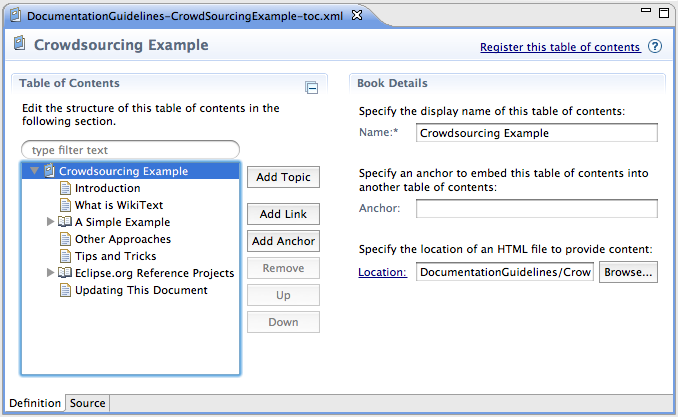

| A Simple Example | ||
|---|---|---|
|
|
|
|
| What is WikiText | Other Approaches | |
The best way to learn is by doing. As an example, we will take this wiki entry and create some Eclipse help content from it. To accomplish this, we will use Ant so you can easily integrate this into a build if you wish.
The first order of business is to setup your Ant classpath so you can use the WikiText Ant tasks.
You can download the WikiText SDK which contains the jars you'll need. In our case, we only need the org.eclipse.mylyn.wikitext.core_1.3.0.I20100116-0000-e3x.jar and org.eclipse.mylyn.wikitext.mediawiki.core_1.3.0.I20100116-0000-e3x.jar since we are only working with Mediawiki. If we were working with something like confluence, we would have to grab the respective JAR and put it on our classpath.
In the end, your Ant file will look something like the snippet below.
<path id="wikitext.tasks.classpath"> <fileset dir="lib"> <include name="org.eclipse.mylyn.wikitext.*core*.jar"/> </fileset> </path> <taskdef classpathref="wikitext.tasks.classpath" resource="org/eclipse/mylyn/internal/wikitext/mediawiki/core/tasks/tasks.properties"/> <taskdef classpathref="wikitext.tasks.classpath" resource="org/eclipse/mylyn/wikitext/core/util/anttask/tasks.properties"/>
After we have setup the classpath for our task, we need to go and fetch the wiki content and convert it to Eclipse help. This is accomplished via the mediawiki-to-eclipse-help Ant task.
In the end, your Ant file will look something like the snippet below.
<mediawiki-to-eclipse-help
wikiBaseUrl="http://wiki.eclipse.org"
validate="true"
failonvalidationerror="true"
prependImagePrefix="images"
formatoutput="true"
defaultAbsoluteLinkTarget="doc_external"
dest="${basedir}"
title="Crowdsourcing Documentation"
generateUnifiedToc="false">
<path name="DocumentationGuidelines/Example"
title="Crowdsourcing Documentation"
generateToc="true"/>
...
When the Ant task is executed... the wiki content will be transformed into HTML and a respective Eclipse help TOC XML will be generated.

When you self-host and launch Eclipse Help in the self-hosted instance, you should see this content there as shown below.

The full source code for this example is available on GitHub.
|
|

|
|
| What is WikiText | Other Approaches |